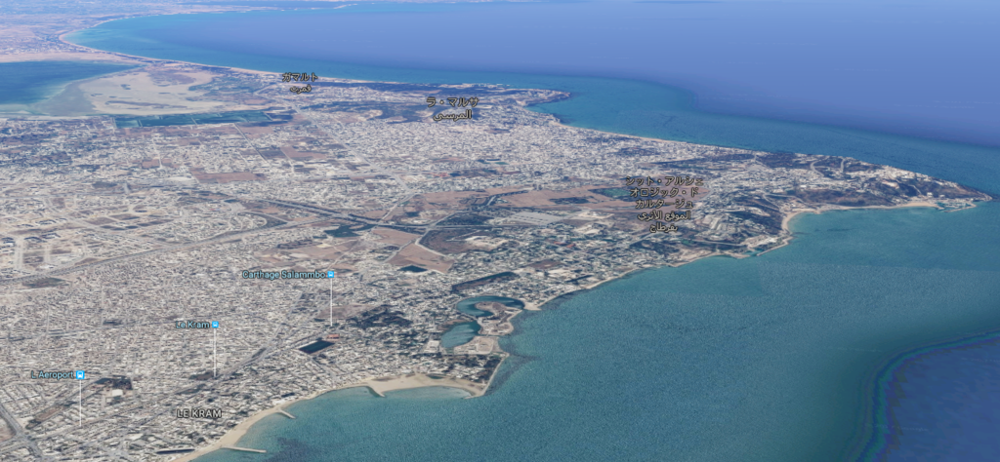

『興亡の世界史 通商国家カルタゴ』
執筆日時：
前回はハンニバルの本を読んだけど、今回はカルタゴの本を読んだ。
カルタゴというのは、むかしフェニキア人がアフリカに建てた都市国家。この“アフリカ”というのは、現在のチュニジアの辺りを指す。“アシア（アジア）”がかつて、現在のトルコの辺りのことだった（小アジア）と似ているかもしれない。
カルタゴ（前814～前146）
— 偏見で語る消滅国家bot (@henkenkokkabot) 2017年8月2日
共和制ローマと地中海の覇権を争った国家。三次に渡るポエニ戦争を戦ったが、最後は3年間の包囲戦に敗北。市街は破壊、放火されたうえ、跡地に塩を撒かれるという稀にみるえげつない方法で滅ぼされた。 pic.twitter.com/fjSUZChWfk
ちなみに、カルタゴという名前は、もともとカルト・ハダシュト（新しい街）だったらしい。んじゃ、カルタゴ・ノウァ（のちにイベリアに建設された“新・カルタゴ”市）は、“新しい新しい街”になるな。めっちゃ新しい感じある。
この“新しい街”の物語は、ティロスの王女・ディドを襲った悲劇から始まる。ディドは叔父のシュカイオスと結ばれ、テュロス市の主神・メルカルト神に巫女として仕えていた。しかし、父が亡くなると、兄と叔父の間で財産争いが勃発。シュカイオスは兄に殺されてしまう。
そこで、ディドは供廻りとともに帆を張り、ティロスから西へ向けて旅立つことになった。途中、女神アシュタルテ（アフロディテ）の島・キプロスなどに寄港しながら、ディドたちはアフリカの地に降り立つ。しかし、そこはイアルバースという名の王が治める土地だった。
ディドはイアルバースに土地の割譲を求めた。「私と供廻りが住むに足る土地を分けてほしい」。イアルバースは応える。「一頭の牛の皮で覆える程度ならよろしい」。そこでディドは牛の皮を割き、細長い帯を作り、2つの内海を望む丘を囲んだ。これがのちのビュルサの丘、カルタゴの心臓部になったという。丘から望める2つの内海は、一つは商港、一つは軍港として用いられるようになった。

（中央のなにもないところがビュルサの丘かな。手前の2つの湖が旧商港・軍港）
ちなみに、ディドはイアルバースの求婚から逃れるために、自殺したという。ローマの建国神話では、カルタゴに立ち寄ったアエネイスに惚れたものの（アフロディテの差し金）、振られた（ユピテルの差し金）ので自決したとされている。どちらでも火葬の火に自らを投じるというドラマティックな死に方だったそうだが、これはメルカルト信仰と関係があるみたい。どちらにしろ、フェニキア人（ギリシア人による呼び名はポイニケー、ラテン語でポエニ人）の宗教は他の民族から異質なものと思われていたらしい。真実は明らかではないが、幼児を生け贄に捧げる儀式があったとも言われている。
カルタゴ人はギリシア人と地中海を分け合う存在であったにもかかわらず、その歴史はわからないところが多い。ローマに滅ぼされて塩を撒かれたとき、文献の多くが失われたようだ。そもそも、商売に精を出すのが好きで、歴史を書くことにそれほど興味を持たなかったのかもしれない。
本書は二人の研究者が失われたティロス、カルタゴの歴史を丹念に追っている。自分が世界史を習った頃、フェニキアといえばシドン、ティルスといった都市国家を築いたこと*1、アルファベットの原型を生んだこと、カルタゴやガデスを建設して西地中海を支配したことぐらいだったように思う。地中海の貿易の流れや、サラミスの海戦の裏で行われたヒメラの戦い、ポエニ戦争前史としてのシチリア、南イタリアとの関係についてまとまった知識が得られたのは、本書のおかげだ。
そして、クライマックスの“カルタゴ帝国 vs ローマ連邦”。事実が並べられているだけで、とくに抒情的な表現はないのに、カルタゴが滅びるくだりでは、少し胸が熱くなった。スキピオ・アエミリアヌスの慨嘆がオーバーラップしたせいかもしれない。結局のところ、なぜカルタゴがあれほどまでにローマの憎しみや妬みを買ったのかは理解できなかったが、なぜカルタゴがローマに敗れたのかはよくわかった気がする。ハンニバルはローマ連邦の解体に失敗し、かえって帝国への道を用意してしまったのかもしれない。
ただ、カルタゴ人は名前のレパートリーが少なすぎて、困った。ハンノ、マゴ、ハミルカル、ボミルカル、ハンニバル、ハシュドルバル……ぐらいしかねえ！！*2 巻末に名前のレパートリーがまとめられているのは大変親切で助かった……電子書籍だとそれに気づきにくいのがもったいないけど*3。
")
- 作者: 栗田伸子,佐藤育子
- 出版社/メーカー: 講談社
- 発売日: 2016/10/12
- メディア: 文庫
- この商品を含むブログを見る